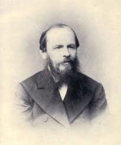
born: October 30, 1821 · Moscow, Russian Empire [now Russia]
He was the second of seven children of Mikhail Andreevich and Maria Dostoevsky. His father, a doctor, was a member of the Russian nobility, owned serfs and had a considerable estate near Moscow where he lived with his family. It's believed that he was murdered by his own serfs in revenge for the violence he would commit against them while in drunken rages. As a child Fyodor was traumatized when he witnessed the rape of a young female serf and suffered from epileptic seizures. He was sent to a boarding school, where he studied sciences, languages and literature. He was devastated when his favorite writer, Aleksandr Pushkin, was killed in a duel in St. Petersburg in 1837. That same year Dostoevsky's mother died, and he moved to St. Petersburg. There he graduated from the Military Engineering Academy, and served in the Tsar's government for a year.
Dostoevsky's literary career began in 1846 with the publication of his first novel, Poor Folk, which was well received by critics. However, his second novel, The Double, was a commercial failure and received negative reviews In 1849
Some of his most famous works include:
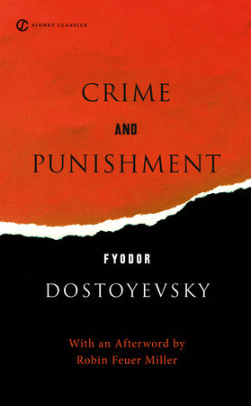
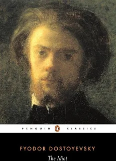
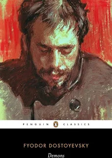
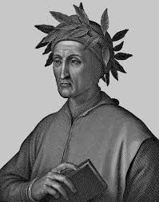
Born: June 1, 1265 · Florence, Republic of Florence [now Tuscany, Italy]
Alighieri enjoyed careful artistic and scientific training. He lost his mother when he was ten. His father died around 1281. A few years later, Dante married the daughter of the influential Donati family, Gemma. The four children Giovanni, Pietro, Jacopo and Antonia emerged from this relationship. Dante is said to have studied in Bologna from 1287. There he made the acquaintance of poets of the new style such as Guido Guinizelli, Guido Cavalcanti and Cino da Pistoia. Already as a young adult, he took part in the battle against the Aretines at Campaldino, near Florence, in 1289, which resulted in the defeat of the Ghibelline party and the victory of the Florentines. A year later he was involved in the storming of the Pisan fortress of Caprona. In the two years 1292/93 Dante wrote his work "Vita Nuova", which is about a woman named Beatrice. He is said to have met her twice in 1274 and 1283.
Dante's literary career began in 1292 with the publication of his first work, Vita Nuova, which was well received by critics. However, his second work, Convivio, was a commercial failure and received negative reviews In 1304.
Some of his most famous works include:
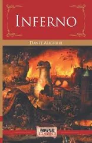
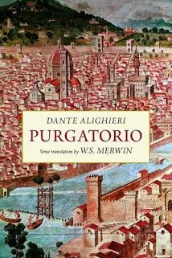
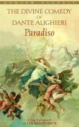
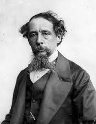
Born: February 7, 1812 · Portsmouth, Hampshire, England, UK
Charles Dickens' father was a clerk at the Naval Pay Office, and because of this the family had to move from place to place: Plymouth, London, Chatham. It was a large family and despite hard work, his father couldn't earn enough money. In 1823 he was arrested for debt and Charles had to start working in a factory, labeling bottles for six shillings a week. The economy eventually improved and Charles was able to go back to school. After leaving school, he started to work in a solicitor's office. He learned shorthand and started as a reporter working for the Morning Chronicle in courts of law and the House of Commons. In 1836 his first novel was published, "The Pickwick Papers". It was a success and was followed by more novels: "Oliver Twist" (1837), "Nicholas Nickleby" (1838-39) and "Barnaby Rudge" (1841). He traveled to America later that year and aroused the hostility of the American press by supporting the abolitionist (anti-slavery) movement. In 1858 he divorced his wife Catherine, who had borne him ten children. During the 1840s his social criticism became more radical and his comedy more savage: novels like "David Copperfield" (1849-50), "A Tale of Two Cities" (1959) and "Great Expectations" (1860-61) only increased his fame and respect. His last novel, "The Mystery of Edwin Drood", was never completed and was later published posthumously.
Charles Dickens' literary career began in 1836 with the publication of his first novel, "The Pickwick Papers", which was well received by critics. However, his second novel, "Oliver Twist", was a commercial failure and received negative reviews In 1837.
Some of his most famous works include:
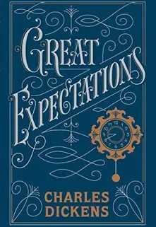
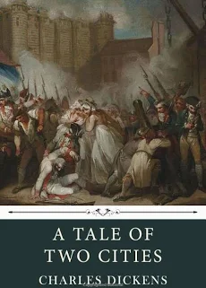
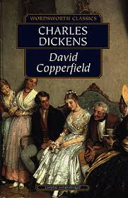
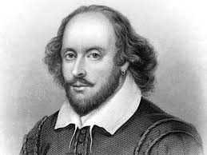
Born: April 23, 1564 · Stratford-upon-Avon, Warwickshire, Kingdom of England [now England, UK]
William Shakespeare's birthdate is assumed from his baptism on April 25. His father John was the son of a farmer who became a successful tradesman; his mother Mary Arden was gentry. He studied Latin works at Stratford Grammar School, leaving at about age 15. About this time his father suffered an unknown financial setback, though the family home remained in his possession. An affair with Anne Hathaway, eight years his senior and a nearby farmer's daughter, led to pregnancy and a hasty marriage late in 1582. Susanna was born in May of 1583, twins Hamnet and Judith in January of 1585. By 1592 he was an established actor and playwright in London though his "career path" afterward (fugitive? butcher? soldier? actor?) is highly debated. When plague closed the London theatres for two years he apparently toured; he also wrote two long poems, "Venus and Adonis" and "The Rape of Lucrece". He may have spent this time at the estate of the Earl of Southampton. By December 1594 he was back in London as a member of the Lord Chamberlain's Men, the company he stayed with the rest of his life. In 1596 he seems to have purchased a coat of arms for his father; the same year Hamnet died at age 11. The following year he purchased the grand Stratford mansion New Place. A 1598 edition of "Love's Labors" was the first to bear his name, though he was already regarded as England's greatest playwright. He is believed to have written his "Sonnets" during the 1590s. In 1599 he became a partner in the new Globe Theatre, the company of which joined the royal household on the accession of James in 1603. That is the last year in which he appeared in a cast list. He seems to have retired to Stratford in 1612, where he continued to be active in real estate investment. The cause of his death is unknown.
William Shakespeare's works include 37 plays and 154 sonnets. His plays are divided into three categories: histories, comedies, and tragedies.
Some of his most famous works include:
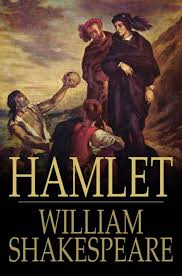
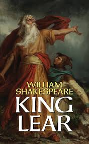
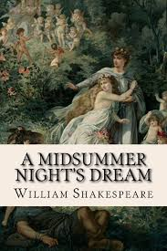
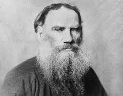
Born: August 28, 1828 · Yasnaya Polyana, Tula Governorate, Russian Empire [now Tula Oblast, Russia]
Count Lev Nikolaevich Tolstoy was born on September 9, 1828, in his ancestral estate Yasnaya Polyana, South of Moscow, Russia. He was the fourth of five children in a wealthy family of Russian landed Gentry. His parents died when he was a child, and he was brought up by his elder brothers and relatives. Leo Tolstoy studied languages and law at Kazan University for three years. He was dissatisfied with the school and left Kazan without a degree, returned to his estate and educated himself independently. In 1848 he moved to the capital, St. Petersburg, and there passed two tests for a law degree. He was abruptly called to return to his estate near Moscow, where he inherited 4000 acres of land and 350 serfs. There Tolstoy built a school for his serfs, and acted as a teacher. He briefly went to a Medical School in Moscow, but lost a fortune in gambling, and was pulled out by his brother. He took military training, became an Army officer, and moved to the Caucasus, where he lived a simple life for three years with Cossacs. There he wrote his first novel - "Childhood" (1852), it became a success. With writing "Boyhood" (1854) and "Youth" (1857) he concluded the autobiographical trilogy. In the Crimean War (1854-55) Tolstoy served as artillery commander in the Battle of Sevastopol, and was decorated for his courage. Between the battles he wrote three stories titled "Sevastopol Sketches", that won him wide attention, and a complement from the Czar Aleksandr II.
Tolstoy's literary career began in 1852 with the publication of his first novel, "Childhood", which was well received by critics. However, his second novel, "Boyhood", was a commercial failure and received negative reviews In 1854.
Some of his most famous works include:
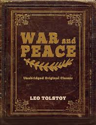
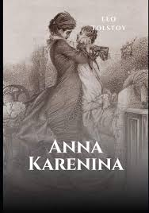
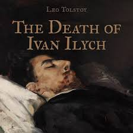